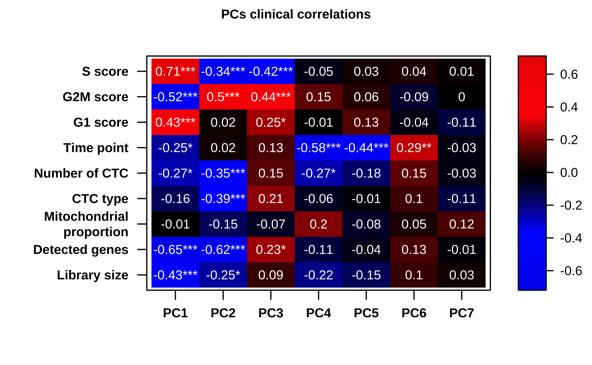

Last updated: 2022-04-26
Checks: 7 0
Knit directory:
diamantopoulou-ctc-dynamics/
This reproducible R Markdown analysis was created with workflowr (version 1.6.2). The Checks tab describes the reproducibility checks that were applied when the results were created. The Past versions tab lists the development history.
Great! Since the R Markdown file has been committed to the Git repository, you know the exact version of the code that produced these results.
Great job! The global environment was empty. Objects defined in the global environment can affect the analysis in your R Markdown file in unknown ways. For reproduciblity it’s best to always run the code in an empty environment.
The command set.seed(20220425) was run prior to running
the code in the R Markdown file. Setting a seed ensures that any results
that rely on randomness, e.g. subsampling or permutations, are
reproducible.
Great job! Recording the operating system, R version, and package versions is critical for reproducibility.
Nice! There were no cached chunks for this analysis, so you can be confident that you successfully produced the results during this run.
Great job! Using relative paths to the files within your workflowr project makes it easier to run your code on other machines.
Great! You are using Git for version control. Tracking code development and connecting the code version to the results is critical for reproducibility.
The results in this page were generated with repository version 34ee513. See the Past versions tab to see a history of the changes made to the R Markdown and HTML files.
Note that you need to be careful to ensure that all relevant files for
the analysis have been committed to Git prior to generating the results
(you can use wflow_publish or
wflow_git_commit). workflowr only checks the R Markdown
file, but you know if there are other scripts or data files that it
depends on. Below is the status of the Git repository when the results
were generated:
Ignored files:
Ignored: .Rhistory
Ignored: .Rproj.user/
Untracked files:
Untracked: analysis/0_differential_expression_gsea_gsva.md
Untracked: analysis/about.md
Untracked: analysis/br16_dge.md
Untracked: analysis/br16_pca.md
Untracked: analysis/core_gene_sets.md
Untracked: analysis/gsea_across_models.md
Untracked: analysis/index.md
Untracked: analysis/license.md
Untracked: analysis/patients_ctc_counts_distribution.md
Untracked: data/differential_expression/
Untracked: data/patients/
Untracked: data/resources/
Untracked: data/sce/
Note that any generated files, e.g. HTML, png, CSS, etc., are not included in this status report because it is ok for generated content to have uncommitted changes.
These are the previous versions of the repository in which changes were
made to the R Markdown (analysis/br16_pca.Rmd) and HTML
(docs/br16_pca.html) files. If you’ve configured a remote
Git repository (see ?wflow_git_remote), click on the
hyperlinks in the table below to view the files as they were in that
past version.
| File | Version | Author | Date | Message |
|---|---|---|---|---|
| html | c0865c6 | fcg-bio | 2022-04-26 | Build site. |
| html | a136590 | fcg-bio | 2022-04-26 | Build site. |
| html | bfb622b | fcg-bio | 2022-04-26 | Build site. |
| html | 1006c84 | fcg-bio | 2022-04-26 | Build site. |
| Rmd | 0ded9f5 | fcg-bio | 2022-04-26 | added final code |
Setup environment
knitr::opts_chunk$set(results='asis', echo=TRUE, message=FALSE, warning=FALSE, error=FALSE, fig.align = 'center', fig.width = 3.5, fig.asp = 0.618, dpi = 600, dev = c("png", "pdf"), fig.showtext = TRUE)
options(stringsAsFactors = FALSE)Load packages
library(tidyverse)
library(showtext)
library(scater)
library(scran)
library(PCAtools)
library(cowplot)
library(ggalt)
library(grid)
library(gridExtra)
library(knitr)
library(kableExtra)Set font family for figures
font_add("Helvetica", "./configuration/fonts/Helvetica.ttc")
showtext_auto()Load ggplot theme
source("./configuration/rmarkdown/ggplot_theme.R")Load color palettes
source("./configuration/rmarkdown/color_palettes.R")Load functions
source('./code/R-functions/pca_tools.r')
source('./code/R-functions/color_tools.r')Load SingleCellExpression data
use_sce <- readRDS(file.path(params$sce_dir, 'sce_br16.rds'))Configuration
use_metavars <- c(`Library size` = "sum",
`Detected genes` = "detected",
`Mitochondrial\nproportion` = "subsets_Mito_percent",
`CTC type` = "sample_type",
`Number of CTC` = "ctc_n",
`Time point` = "timepoint",
`G1 score` = 'G1_score',
`G2M score` = 'G2M_score',
`S score` = 'S_score')Quantify per-gene variation and select top-500 highly variable genes
fit_res <- modelGeneVar(use_sce, assay.type = "logcpm")
fit_md <- metadata(fit_res)
hvg_var_bio <- getTopHVGs(fit_res, n=500)
use_genes <- hvg_var_bioGenerate PCA object and calculate elbow point.
mat <- logcounts(use_sce)[use_genes,]
rownames(mat) <- rowData(use_sce[use_genes,])$gene_name
p <- PCAtools::pca(mat, metadata = colData(use_sce) %>% data.frame)
p$metadata$timepointf <- factor(p$metadata$timepoint, levels = c('active', 'resting'))
p$metadata$timepoint_sample_type_f <- factor(
p$metadata$timepoint_sample_type,
levels = c('active_ctc_single', 'active_ctc_cluster', 'active_ctc_cluster_wbc', 'resting_ctc_single', 'resting_ctc_cluster', 'resting_ctc_cluster_wbc'))Calculate elbow point
elbow_point <- findElbowPoint(p$variance)Add additional metadata to PCA object
p$metadata <- p$metadata %>%
mutate(`Library size` = sum,
`Detected genes` = detected,
`Mitochondrial\nproportion` = subsets_Mito_percent,
`CTC type` = sample_type,
`Number of CTC` = ctc_n,
`Time point` = timepoint,
`G1 score` = G1_score,
`G2M score` = G2M_score,
`S score` = S_score)Heatmap showing the Pearson’s correlation coefficient of PC1-7 eigenvectors from gene expression with technical and biological variables in BR16-CDX CTCs. P values by two-sided Pearson’s correlation test (*P < 0.01, **P <0.001, ***P <0.0001).
use_cex <- 8/12
eigencorplot(
p,
components = getComponents(p, 1:elbow_point),
metavars = names(use_metavars),
col = c( "blue2", "blue1", "black", "red1", "red2"),
colCorval = 'white',
scale = TRUE,
main = 'PCs clinical correlations',
plotRsquared = FALSE,
signifSymbols = c("***", "**", "*", ""),
signifCutpoints = c(0, 0.0001, 0.001, 0.01, 1),
cexTitleX= use_cex,
cexTitleY= use_cex,
cexLabX = use_cex,
cexLabY = use_cex,
cexMain = use_cex,
cexLabColKey = use_cex,
cexCorval = use_cex
)
| Version | Author | Date |
|---|---|---|
| 1006c84 | fcg-bio | 2022-04-26 |
p$variance[1:elbow_point] %>% data.frame %>% set_names('Variance') %>%
kable(caption = "Percentage of variance associated to each PC") %>%
kable_styling(bootstrap_options = c("striped", "hover"), full_width = F)| Variance | |
|---|---|
| PC1 | 32.706864 |
| PC2 | 7.518723 |
| PC3 | 4.742565 |
| PC4 | 3.000690 |
| PC5 | 1.904646 |
| PC6 | 1.600260 |
| PC7 | 1.303003 |
pca_cor_val <- pca_eigencorplot(p, components = getComponents(p, 1:elbow_point), metavars = names(use_metavars), returnPlot = FALSE)
pca_cor_val$corvals %>% t %>%
kable(caption = "Pearson r values correlation values") %>%
kable_styling(bootstrap_options = c("striped", "hover"), full_width = F)| PC1 | PC2 | PC3 | PC4 | PC5 | PC6 | PC7 | |
|---|---|---|---|---|---|---|---|
| Library size | -0.4348691 | -0.2465262 | 0.0909495 | -0.2155405 | -0.1511203 | 0.0953848 | 0.0261902 |
| Detected genes | -0.6456730 | -0.6200878 | 0.2337476 | -0.1128454 | -0.0422498 | 0.1290895 | -0.0146735 |
| Mitochondrial proportion | -0.0053273 | -0.1536387 | -0.0656106 | 0.2049580 | -0.0788361 | 0.0458012 | 0.1228353 |
| CTC type | -0.1591137 | -0.3877828 | 0.2147562 | -0.0602830 | -0.0106637 | 0.1025418 | -0.1101724 |
| Number of CTC | -0.2725151 | -0.3508628 | 0.1484451 | -0.2680048 | -0.1754515 | 0.1533324 | -0.0316719 |
| Time point | -0.2473968 | 0.0222874 | 0.1293707 | -0.5776125 | -0.4448752 | 0.2867533 | -0.0336370 |
| G1 score | 0.4284753 | 0.0194577 | 0.2475039 | -0.0065806 | 0.1332250 | -0.0370506 | -0.1149801 |
| G2M score | -0.5215066 | 0.4957481 | 0.4399587 | 0.1521718 | 0.0625063 | -0.0885702 | -0.0039446 |
| S score | 0.7091394 | -0.3425337 | -0.4171847 | -0.0468110 | 0.0256570 | 0.0423829 | 0.0103013 |
pca_cor_val$pvals_format <- apply(pca_cor_val$pvals, 2, format.pval, digits = 2)
dimnames(pca_cor_val$pvals_format) <- dimnames(pca_cor_val$pvals)
pca_cor_val$pvals_format %>% t %>%
kable(caption = "Pearson correlation P-values") %>%
kable_styling(bootstrap_options = c("striped", "hover"), full_width = F)| PC1 | PC2 | PC3 | PC4 | PC5 | PC6 | PC7 | |
|---|---|---|---|---|---|---|---|
| Library size | 9.8e-08 | 0.0036 | 0.2887 | 0.0111 | 0.0768 | 0.2658 | 0.7604 |
| Detected genes | < 2e-16 | 5.1e-16 | 0.0058 | 0.1876 | 0.6227 | 0.1313 | 0.8644 |
| Mitochondrial proportion | 0.951 | 0.072 | 0.445 | 0.016 | 0.358 | 0.594 | 0.151 |
| CTC type | 0.062 | 2.6e-06 | 0.011 | 0.482 | 0.901 | 0.231 | 0.198 |
| Number of CTC | 0.0012 | 2.5e-05 | 0.0823 | 0.0015 | 0.0396 | 0.0726 | 0.7123 |
| Time point | 0.00344 | 0.79527 | 0.13046 | 1.2e-13 | 4.6e-08 | 0.00065 | 0.69531 |
| G1 score | 1.6e-07 | 0.8208 | 0.0034 | 0.9389 | 0.1193 | 0.6662 | 0.1793 |
| G2M score | 5.4e-11 | 6.3e-10 | 6.7e-08 | 0.075 | 0.466 | 0.302 | 0.963 |
| S score | < 2e-16 | 3.9e-05 | 3.6e-07 | 0.59 | 0.77 | 0.62 | 0.90 |
Scatter plot showing the principal component PC4 and PC5 of gene expression in CTCs from NSG-CDX-BR16 mice. Upper (PC4) and right (PC5) panels show the density of PC values for active (blue) and rest phase (red) samples.
PCx <- 'PC4'
PCy<- 'PC5'
zt_sample_type_legend_palette_t <- sapply(zt_sample_type_legend_palette, transparent_col, percent = 50)
use_palette <- c(zt_sample_type_legend_palette, timepoint_palette)
use_shapes <- c(
'ZT16 Single CTCs' = 16,
'ZT16 CTC-Clusters' = 17,
'ZT16 CTC-WBC Clusters' = 15,
'ZT4 Single CTCs' = 16,
'ZT4 CTC-Clusters' = 17,
'ZT4 CTC-WBC Clusters' = 15,
active = 1,
resting = 1
)
use_palette_sel <- c(
'ZT16 Single CTCs' = use_palette['active'] %>% unname,
'ZT16 CTC-Clusters' = use_palette['active'] %>% unname,
'ZT16 CTC-WBC Clusters' = use_palette['active'] %>% unname,
'ZT4 Single CTCs' = use_palette['resting'] %>% unname,
'ZT4 CTC-Clusters' = use_palette['resting'] %>% unname,
'ZT4 CTC-WBC Clusters' = use_palette['resting'] %>% unname,
use_palette['active'],
use_palette['resting']
)
circle_data <- cbind(p$metadata,
x = p$rotated[,PCx],
y = p$rotated[,PCy])
xlab_name <- paste0(PCx,', ', p$variance[PCx] %>% round(2) %>% unname, '% variation')
ylab_name <- paste0(PCy,', ', p$variance[PCy] %>% round(2) %>% unname, '% variation')
biplot_res <- circle_data %>%
ggplot(aes(x, y)) +
geom_point(
aes(fill = zt_sample_type_legend, color = zt_sample_type_legend, shape = zt_sample_type_legend),
alpha = 0.4, size = 3
) +
geom_encircle(
aes(color = timepoint),
alpha = 0.6,
size = 1.5,
s_shape = 1.5,
show.legend = FALSE,
na.rm = TRUE,
expand = 0) +
scale_color_manual(values = use_palette_sel) +
scale_fill_manual(values = use_palette_sel) +
scale_shape_manual(values = use_shapes) +
theme_cowplot(font_family = "Helvetica", font_size = 8, rel_small = 8/8, rel_tiny = 8/8, rel_large = 8/8) +
theme (
axis.line = element_line(size = rel(0.25)),
axis.ticks = element_line(size = rel(0.25)),
panel.border = element_rect(size = rel(1), fill = NA, colour = "black")
) +
# guides(shape = FALSE) +
# background_grid() +
labs(
x = xlab_name,
y = ylab_name
)Main plot
x_density_plot <- ggplot(circle_data, aes(x = x, fill = timepoint)) +
geom_density(alpha = 0.5, show.legend = FALSE) +
scale_fill_manual(values = timepoint_palette) +
theme (
axis.line = element_blank(),
axis.ticks = element_blank(),
axis.text = element_blank(),
axis.title = element_blank()
)
y_density_plot <- ggplot(circle_data, aes(x = y, fill = timepoint)) +
geom_density(alpha = 0.5, show.legend = FALSE) +
scale_fill_manual(values = timepoint_palette) +
theme (
axis.line = element_blank(),
axis.ticks = element_blank(),
axis.text = element_blank(),
axis.title = element_blank()
) +
coord_flip()
plot_grid(
x_density_plot, NULL, NULL,
NULL, NULL, NULL,
biplot_res + theme(legend.position = "none"), NULL, y_density_plot,
nrow = 3,
ncol = 3,
align="hv",
axis = "tblr",
rel_heights = c(1.1, -0.45, 3),
rel_widths = c(3, -0.45, 1)
)
| Version | Author | Date |
|---|---|---|
| 1006c84 | fcg-bio | 2022-04-26 |
Plot legend
legend <- cowplot::get_legend(biplot_res)
grid.newpage()
grid.draw(legend)
sessionInfo()R version 4.1.0 (2021-05-18) Platform: x86_64-apple-darwin17.0 (64-bit) Running under: macOS Big Sur 10.16
Matrix products: default BLAS: /Library/Frameworks/R.framework/Versions/4.1/Resources/lib/libRblas.dylib LAPACK: /Library/Frameworks/R.framework/Versions/4.1/Resources/lib/libRlapack.dylib
locale: [1] en_US.UTF-8/en_US.UTF-8/en_US.UTF-8/C/en_US.UTF-8/en_US.UTF-8
attached base packages: [1] grid parallel stats4 stats graphics
grDevices utils
[8] datasets methods base
other attached packages: [1] lattice_0.20-45 kableExtra_1.3.4
[3] knitr_1.36 gridExtra_2.3
[5] ggalt_0.4.0 cowplot_1.1.1
[7] PCAtools_2.4.0 ggrepel_0.9.1
[9] scran_1.20.1 scater_1.20.1
[11] scuttle_1.2.1 SingleCellExperiment_1.14.1 [13]
SummarizedExperiment_1.22.0 Biobase_2.52.0
[15] GenomicRanges_1.44.0 GenomeInfoDb_1.28.4
[17] IRanges_2.26.0 S4Vectors_0.30.2
[19] BiocGenerics_0.38.0 MatrixGenerics_1.4.3
[21] matrixStats_0.61.0 showtext_0.9-4
[23] showtextdb_3.0 sysfonts_0.8.5
[25] forcats_0.5.1 stringr_1.4.0
[27] dplyr_1.0.7 purrr_0.3.4
[29] readr_2.0.2 tidyr_1.1.4
[31] tibble_3.1.5 ggplot2_3.3.5
[33] tidyverse_1.3.1 workflowr_1.6.2
loaded via a namespace (and not attached): [1] readxl_1.3.1
backports_1.3.0
[3] systemfonts_1.0.2 plyr_1.8.6
[5] igraph_1.2.7 BiocParallel_1.26.2
[7] digest_0.6.28 htmltools_0.5.2
[9] viridis_0.6.2 fansi_0.5.0
[11] magrittr_2.0.1 ScaledMatrix_1.0.0
[13] cluster_2.1.2 tzdb_0.2.0
[15] limma_3.48.3 modelr_0.1.8
[17] extrafont_0.17 extrafontdb_1.0
[19] svglite_2.0.0 colorspace_2.0-2
[21] rvest_1.0.2 haven_2.4.3
[23] xfun_0.27 crayon_1.4.2
[25] RCurl_1.98-1.5 jsonlite_1.7.2
[27] glue_1.4.2 gtable_0.3.0
[29] zlibbioc_1.38.0 XVector_0.32.0
[31] webshot_0.5.2 DelayedArray_0.18.0
[33] proj4_1.0-10.1 BiocSingular_1.8.1
[35] Rttf2pt1_1.3.9 maps_3.4.0
[37] scales_1.1.1 DBI_1.1.1
[39] edgeR_3.34.1 Rcpp_1.0.7
[41] viridisLite_0.4.0 dqrng_0.3.0
[43] rsvd_1.0.5 metapod_1.0.0
[45] httr_1.4.2 RColorBrewer_1.1-2
[47] ellipsis_0.3.2 farver_2.1.0
[49] pkgconfig_2.0.3 sass_0.4.0
[51] dbplyr_2.1.1 locfit_1.5-9.4
[53] utf8_1.2.2 labeling_0.4.2
[55] tidyselect_1.1.1 rlang_0.4.12
[57] reshape2_1.4.4 later_1.3.0
[59] munsell_0.5.0 cellranger_1.1.0
[61] tools_4.1.0 cli_3.1.0
[63] generics_0.1.1 broom_0.7.10
[65] evaluate_0.14 fastmap_1.1.0
[67] yaml_2.2.1 fs_1.5.0
[69] sparseMatrixStats_1.4.2 whisker_0.4
[71] ash_1.0-15 xml2_1.3.2
[73] compiler_4.1.0 rstudioapi_0.13
[75] beeswarm_0.4.0 reprex_2.0.1
[77] statmod_1.4.36 bslib_0.3.1
[79] stringi_1.7.5 highr_0.9
[81] bluster_1.2.1 Matrix_1.3-4
[83] vctrs_0.3.8 pillar_1.6.4
[85] lifecycle_1.0.1 jquerylib_0.1.4
[87] BiocNeighbors_1.10.0 bitops_1.0-7
[89] irlba_2.3.3 httpuv_1.6.3
[91] R6_2.5.1 promises_1.2.0.1
[93] KernSmooth_2.23-20 vipor_0.4.5
[95] MASS_7.3-54 assertthat_0.2.1
[97] rprojroot_2.0.2 withr_2.4.2
[99] GenomeInfoDbData_1.2.6 hms_1.1.1
[101] beachmat_2.8.1 rmarkdown_2.11
[103] DelayedMatrixStats_1.14.3 git2r_0.28.0
[105] lubridate_1.8.0 ggbeeswarm_0.6.0